The group's name, BTS, stands for the Korean expression Bangtan Sonyeondan (Korean: 방탄소년단; Hanja: 防彈少年團), literally meaning "Bulletproof Boy Scouts".BTS is a seven-member South Korean boy band that began formation in 2010 and debuted in 2013 under Big Hit Entertainment.[4] The septet—composed of Jin, Suga, J-Hope, RM, Jimin, V, and Jungkook—co-writes and co-produces much of their own output.Their lyrics, often focused on personal and social commentary, touch on the themes of mental health, troubles of school-age youth and coming-of-age, loss, the journey towards loving oneself, and individualism.

BTS for Dispatch in 2019
From left to right: Jin, RM, Jungkook, J-Hope, Suga, V, and Jimin
BTS began its formation in 2010 after Big Hit Entertainment CEO Bang Si-hyuk met with group leader RM.On June 12, 2013, BTS released their debut single album 2 Cool 4 Skool, the first installment in their "school trilogy" series, simultaneously with its lead single "No More Dream", which peaked at number 124 in Korea before quickly falling off the charts.In September 2013, BTS released the second part to their "school trilogy,” the extended play O!RUL8,2?, along with its single "N.O,” which peaked at number 92 in Korea.

BTS in 2013 performing at the Incheon Music Center
BTS embarked on their first concert tour, 2014 BTS Live Trilogy Episode II: The Red Bullet, from October to December, held in various halls and theaters in six cities: Seoul, Kobe, Tokyo, Manila, Singapore, and Bangkok.After ending their Japan tour, BTS held their second solo concert in Korea, BTS Live Trilogy Episode I: BTS Begins, in March to a crowd of 6,500 fans.In November, BTS commenced their third concert tour, 2015 BTS LIVE "The Most Beautiful Moment in Life: On Stage", debuting their new song and the lead single from their fourth EP The Most Beautiful Moment in Life, Part 2, "Run", during the Seoul dates.BTS embarked on their Asia tour extension, 2016 BTS LIVE "The Most Beautiful Moment in Life On Stage: Epilogue", from May to August, visiting 10 cities and performing to 144,000 fans.During their tour, BTS held a landmark two-day concert at the Olympic Gymnastics Arena in Seoul in May.
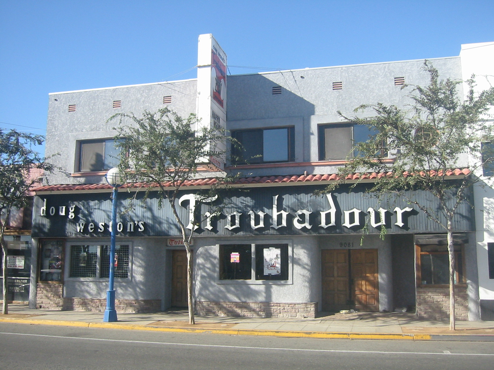Exterior of the nightclub Troubadour (photo taken 2006) where BTS held their first concert in the United States for free
BTS released their first English-language single, "Dynamite", on August 21. Its music video broke the YouTube record for the most viewed premiere, with more than 3 million viewers, and set a new record for the most viewed video in the first 24 hours of release. It also became the first music video on the platform to surpass 100 million views in less than one day.On November 20, 2020, BTS' fifth Korean studio album Be was released with "Life Goes On" as its lead single. The single had its debut performance at the 2020 American Music Awards on November 22.
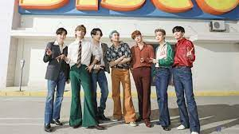
Dynamite and Life Goes On released in 2020
On April 26, BTS held a 1-hour livestream countdown featuring a melting cube of butter. Marking the end of the countdown, it was revealed that they were coming back on May 21 with their second English-language single, "Butter".It became the most viewed YouTube video on its first day, with 108.2 million views.
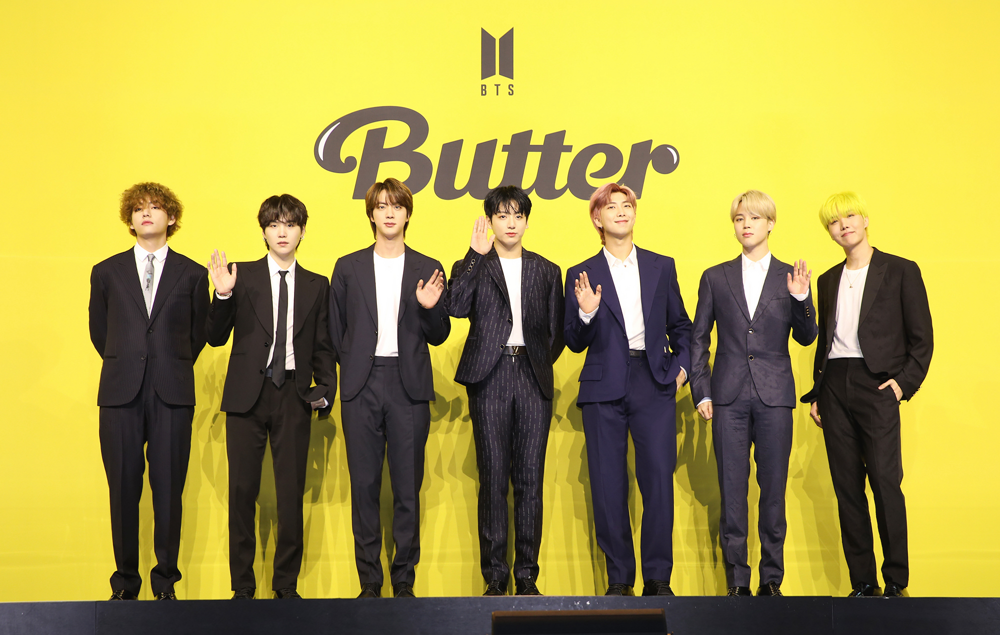Kim Seok-jin (Korean: 김석진; born December 4, 1992), also known by his stage name Jin, is a South Korean singer, songwriter, and member of the South Korean boy band BTS since June 2013.
Apart from singing, Kim has also appeared as a host on multiple South Korean music programs from 2016 to 2018. In 2018, he was awarded the fifth-class Hwagwan Order of Cultural Merit by the President of South Korea along with the other members of BTS, for his contributions to Korean culture.
Kim Nam-joon (Korean: 김남준; born September 12, 1994), better known by his stage name RM (formerly Rap Monster), is a South Korean rapper, songwriter and record producer.
He is the leader of the South Korean boy group BTS.
RM selected the name "Rap Monster" during his time as an idol trainee. Though commonly misunderstood that the name means that he "raps like a monster", it actually derives from the lyrics of a song he wrote, inspired by San E's "Rap Genius".RM selected the name "Rap Monster" during his time as an idol trainee. Though commonly misunderstood that the name means that he "raps like a monster", it actually derives from the lyrics of a song he wrote, inspired by San E's "Rap Genius".
Min Yoon-gi (Korean: 민윤기; born March 9, 1993), better known by his stage names Suga (stylized as SUGA) and Agust D, is a South Korean rapper, songwriter and record producer.
The stage name Suga (슈가) is derived from the first syllables of the term shooting guard (슈팅 가드), the position he played in basketball as a student. He adopted the alias Agust D in 2016 for his mixtape, which is derived from the initials DT, short for his birthplace, Daegu Town, and "Suga" spelled backwards.
Jung Ho-seok (Korean: 정호석; born February 18, 1994), better known by his stage name J-Hope (stylized as j-hope), is a South Korean rapper, songwriter, dancer, and record producer. In 2013, J-Hope made his debut as a member of South Korean boy band BTS, managed under Big Hit Music.
His stage name, "J-Hope (제이홉)", comes from his desire to represent hope for fans, as well as to be "the hope of BTS.

Park Ji-min (Korean: 박지민; born October 13, 1995), better known mononymously as Jimin, is a South Korean singer, songwriter, and dancer. In 2013, he debuted as a member of the South Korean boy band BTS, under the record label Big Hit Entertainment.
Jimin's vocals have been described as delicate and sweet.[41] He is regarded as an exceptional dancer among the members of the group and in K-pop in general.
Kim Tae-hyung (Korean: 김태형; born December 30, 1995), also known by his stage name V, is a South Korean singer, songwriter, and actor. He is a vocalist of the South Korean boy group BTS.
As a performer, V's style is known for its "duality", or his ability to evoke various emotions on stage.As a performer, V's style is known for its "duality", or his ability to evoke various emotions on stage.
V possesses a baritone singing voice that has received a generally positive critical reception, with particular praise for his vocal range and "husky" tone.

Jeon Jung-kook (Korean: 전정국; born September 1, 1997), better known mononymously as Jungkook, is a South Korean singer and songwriter. He is the youngest member of and vocalist in the South Korean boy band BTS.
Jungkook was 2019's most-searched male K-pop idol on Google according to their mid-year chart.[46] He topped the chart again in 2020,[47] and was the most searched K-pop idol on YouTube in 2019 and 2020.
All BTS mv
Smooth like butter Like a criminal undercover Gon' pop like trouble Breakin' into your heart like that (Ooh)
A song with complex, heartbreaking emotions, it also left fans trying to decipher the layered meanings behind the video.
A song that celebrates the K-pop group's accomplishments, their fan ARMY's unconditional love, and most importantly, their self-identity.
It's ok to just live because we're still young
Who do you think you are to say otherwise
Stop comparing, I'm only human
(So what~)
What have you been up to lately?
Who are you thinking of so far away?
‘Mic Drop’ is a track that expresses our swag, hopes, and confidence.Inspired by Barack Obama.
Magic Shop is a song by BTS dedicated to their fans, the ARMYs, and serves to tell us they will forever be with us.
Run BTS (Korean: 달려라 방탄; RR: Dallyeora bangtan; also stylized as Run BTS!) is a South Korean variety web series starring boy band BTS.
Run BTS (Korean: 달려라 방탄; RR: Dallyeora bangtan; also stylized as Run BTS!) is a South Korean variety web series starring boy band BTS.

BTS funny moments are the edits made by the armies.

BTS funny moments are the edits made by the armies.
 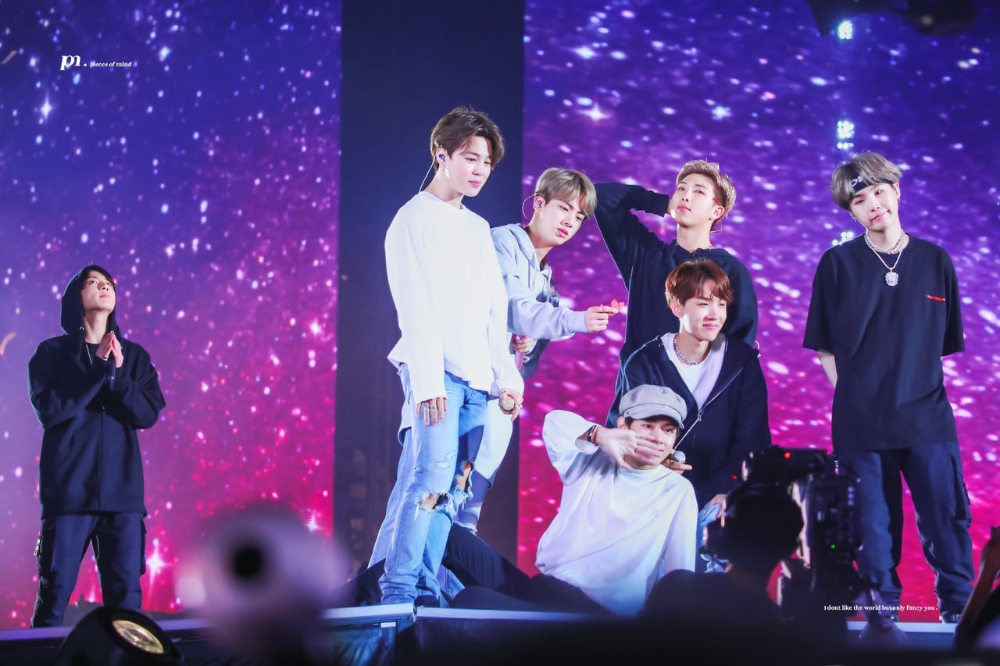
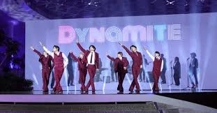
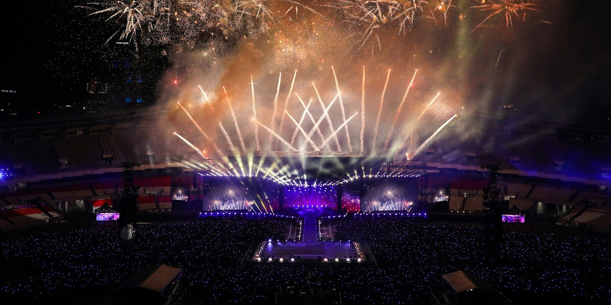
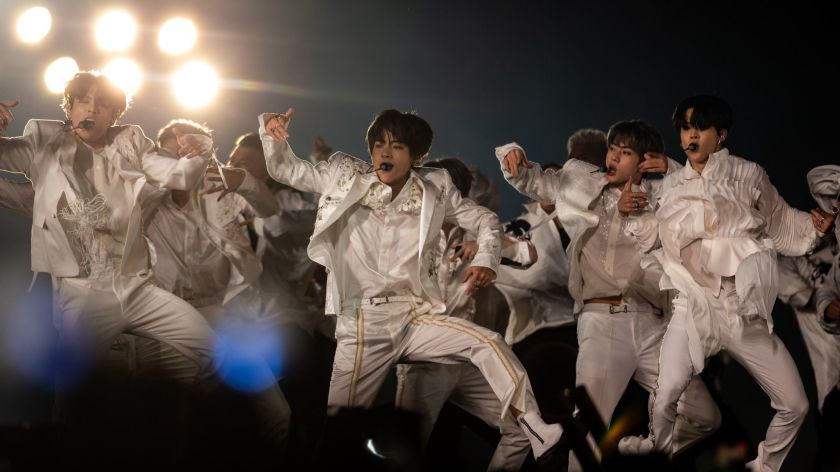
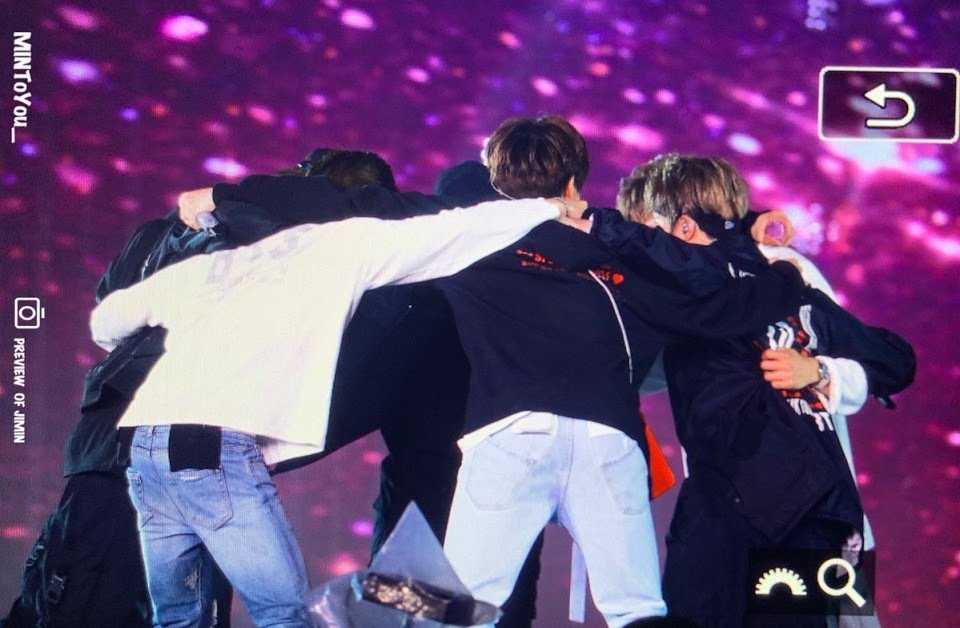
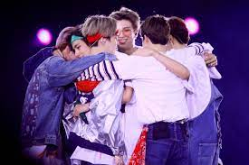
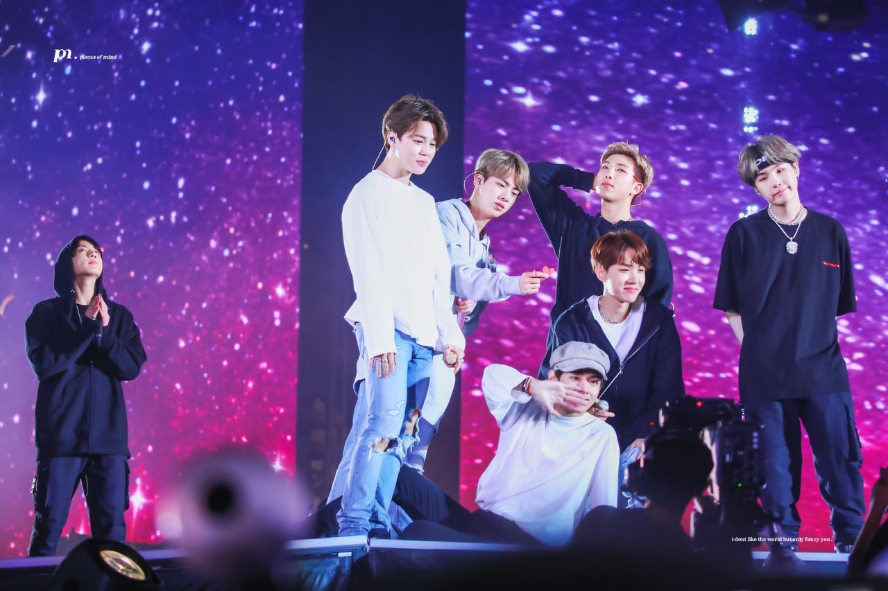
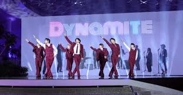
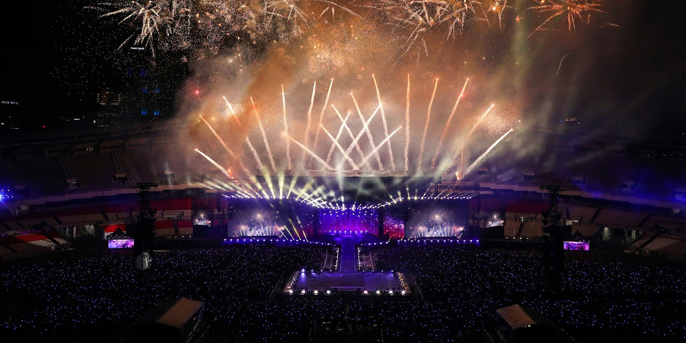
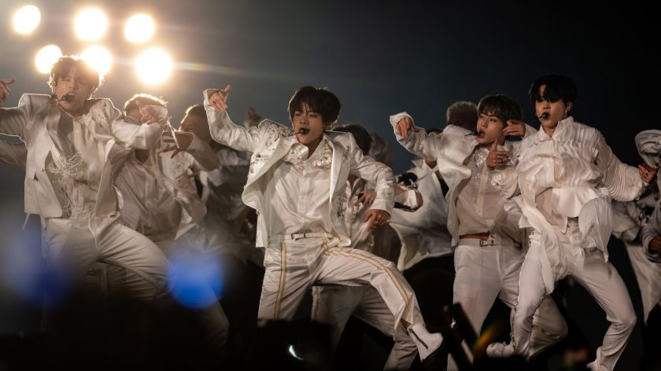
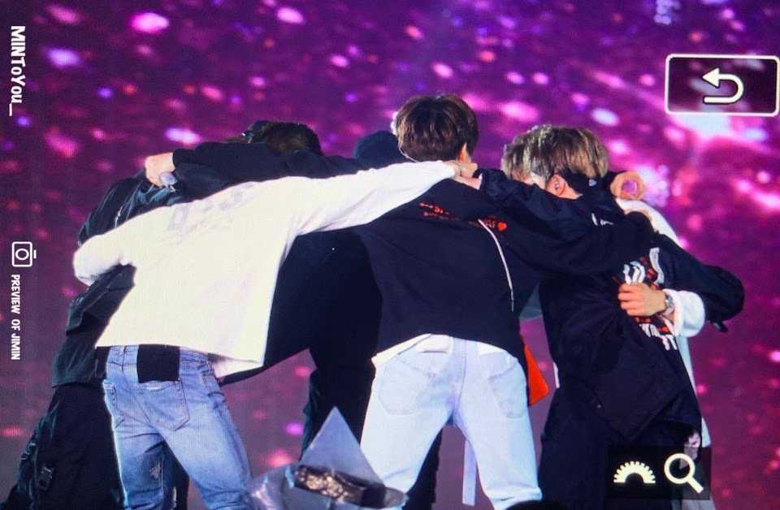
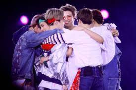